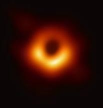

✨para que sirven✨
En el presente se considera que, pese a la perspectiva destructiva que se tiene de los agujeros negros, estos al condensar en torno a sí materia sirven en parte a la constitución de las galaxias y a la formación de nuevas estrellas.

✧✦imagen✧✦
todos los derechos reservados a maria villanueva y daniela gutierrez ©
¿como se forman?
general
sugerencias